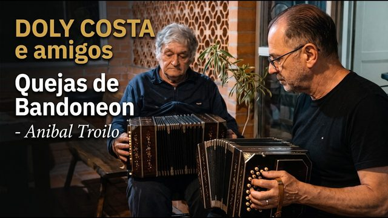
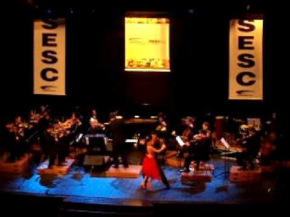
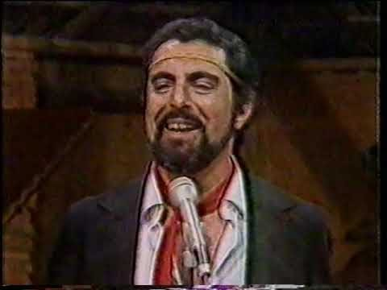
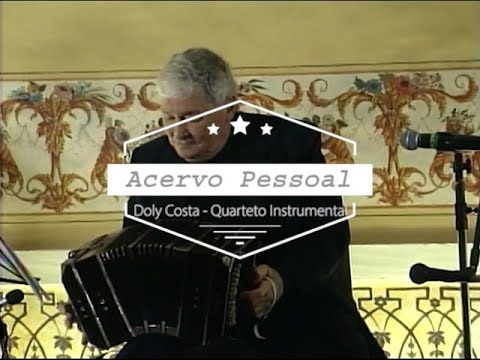
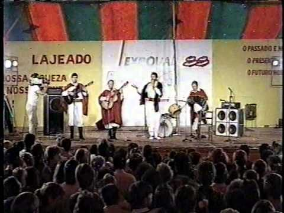
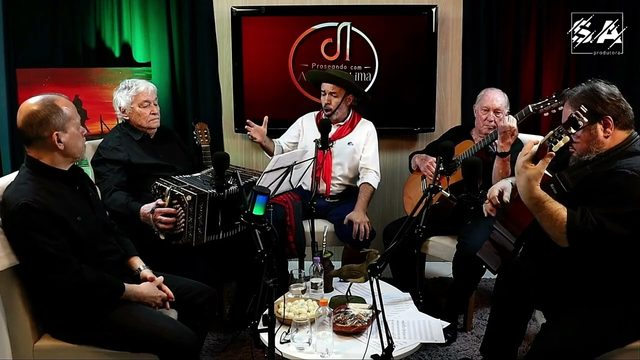
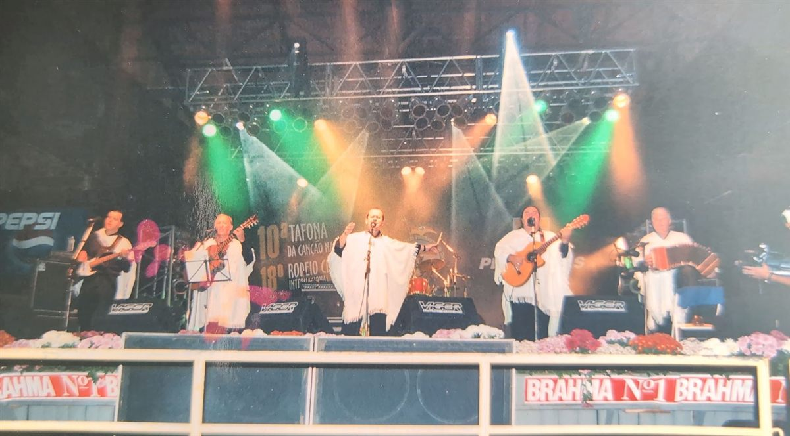
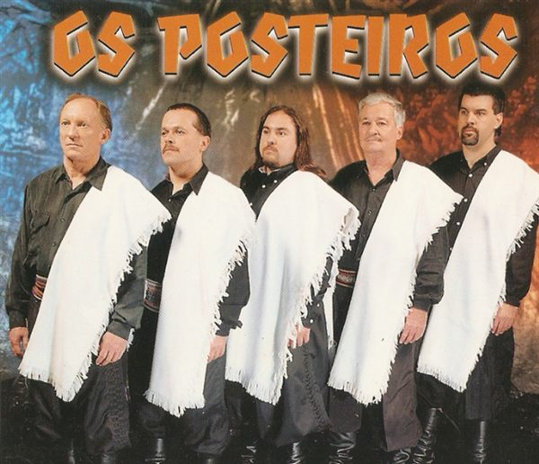
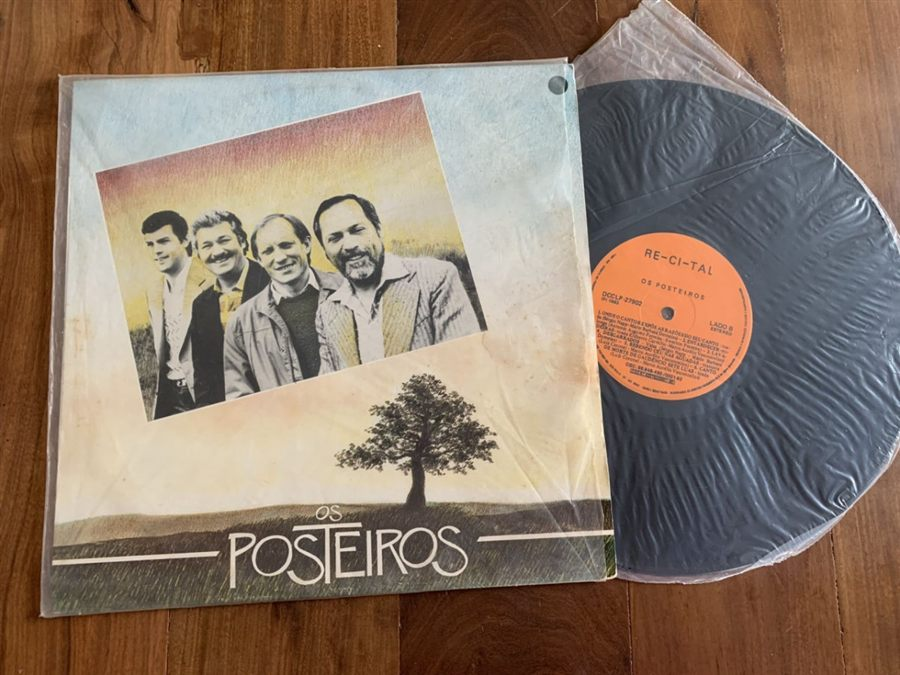

Memoria viva de la música gaúcha
¿Quién es Doly Costa?
Doly Carlos da Costa: una vida dedicada al bandoneón y a la cultura gaúcha.
Nacido en Caçapava do Sul, Doly Carlos da Costa construyó una trayectoria dedicada a la música, al bandoneón y a la valoración de las tradiciones de Rio Grande do Sul.
De sus primeras presentaciones en orquestas de baile a su participación en festivales nativistas, su historia reúne talento, dedicación y reconocimiento cultural.
Hoy, a los 97 años, Doly sigue tocando el bandoneón.
El nombre BanDoly es un homenaje a él: bandoneón + Doly.
Desliza para conocer la historiaLínea de tiempo
Principales acontecimientos y reconocimientos de su trayectoria artística.
- Década de 1940Primeros pasos en la música
Todavía adolescente, Doly comenzó a tocar en una orquesta de baile en Caçapava do Sul, inspirado por el bandoneón que tocaba su padre.
- Hacia 1951Orquestas de tango en Porto Alegre
A los 22 años se mudó a la capital gaúcha, donde integró orquestas de tango en las radios Farroupilha y Gaúcha.
- 1977Fundación de Os Posteiros
Retomó su actividad musical y fundó el grupo Os Posteiros, ampliando su participación en la música regionalista y en los festivales nativistas.
- 17 de septiembre de 2001Medalla Simões Lopes Neto
Recibió del Gobierno del Estado de Rio Grande do Sul la Medalla Simões Lopes Neto, en reconocimiento a su excepcional actuación en el campo de la cultura.

Reconocimiento oficial: certificado de la medalla, Palacio Piratini, Porto Alegre. - 2011Premio Vitor Mateus Teixeira
Fue reconocido en la categoría Instrumentista por la Asamblea Legislativa de Rio Grande do Sul.
- 2011Homenaje en la 25ª Moenda da Canção
Recibió un homenaje durante la edición conmemorativa del festival en Santo Antônio da Patrulha.
Videos
Doly en el bandoneón, en grabaciones publicadas en YouTube. El video solo se carga cuando lo tocas.








Fotos
Toca una foto para ampliarla.





El legado de Doly Carlos da Costa
La trayectoria de Doly representa una contribución importante a la preservación y difusión del bandoneón en Rio Grande do Sul.
Su participación en las orquestas de tango, la fundación del grupo Os Posteiros y los reconocimientos recibidos a lo largo de su carrera muestran su vínculo con la música regional y la identidad cultural gaúcha.
Entre los homenajes se destaca la Medalla Simões Lopes Neto, otorgada en 2001, que documenta el reconocimiento oficial del Estado a su labor cultural.
Y la historia continúa: a los 97 años, Doly todavía toca su bandoneón.